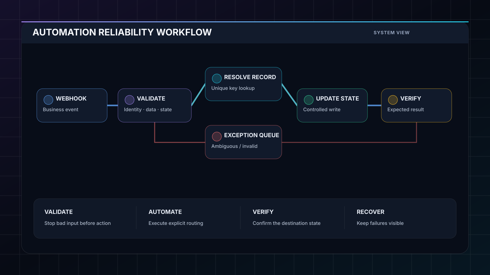

Education Operations
Education Operations Control System
Connected assignments, sessions, attendance, exceptions and PO monitoring into one operational model with automated reminders and management visibility.
ClickUpn8nApps Script
Open system →The focus is not simply connecting applications. It is designing ownership, state, routing, validation, exception handling and the handoff between automation and the people running the business.
Client-identifying details are removed. The screenshots below are anonymized system reconstructions based on the operating architecture and workflow logic.
Connected assignments, sessions, attendance, exceptions and PO monitoring into one operational model with automated reminders and management visibility.

Connected reservation context with guest communication, turnover operations and exception handling so actions follow the current operating state.

API and webhook workflows designed around data contracts, controlled writes, verification and visible recovery paths.
System designs across revenue, service operations, customer support, people operations and private AI.
Lead intake, identity resolution, AI-assisted qualification, CRM routing, SLA monitoring and operations handoff.
Open system →Branch-aware routing, work orders, assignment logic, SLA controls, reconciliation and reporting.
Open system →AI triage, order context, policy gates, human approval, exception queues and audit logging.
Open system →Candidate intake, structured extraction, interview coordination, approval gates and onboarding.
Open system →Local models, permission-aware retrieval, controlled tool use, approvals, evaluation and auditability.
Open system →Lead-to-client workflows that connect commercial state with the operational work that follows.
View capabilities →Validation, controlled updates, post-write verification and visible exception handling are designed alongside the happy path.
Bring the current workflow, tools and bottlenecks. I’ll help map the source of truth, automation boundaries and first implementation step.